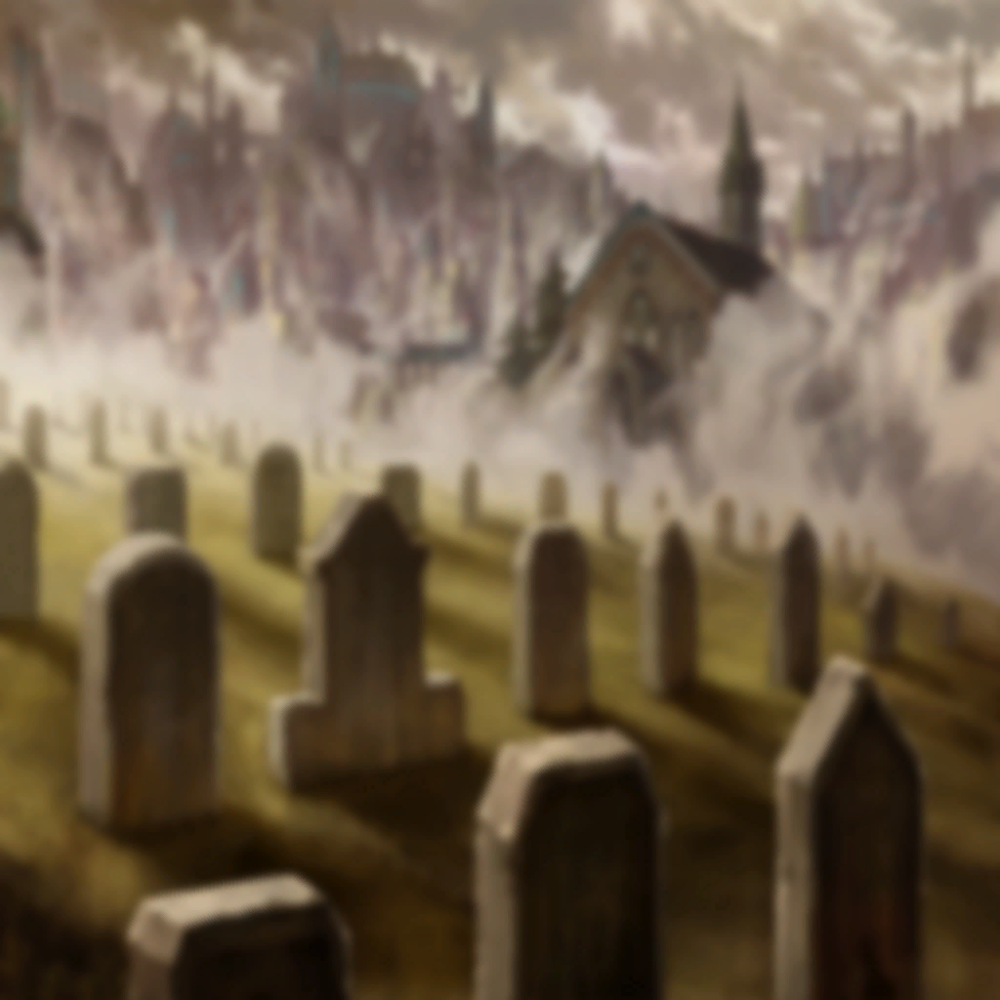
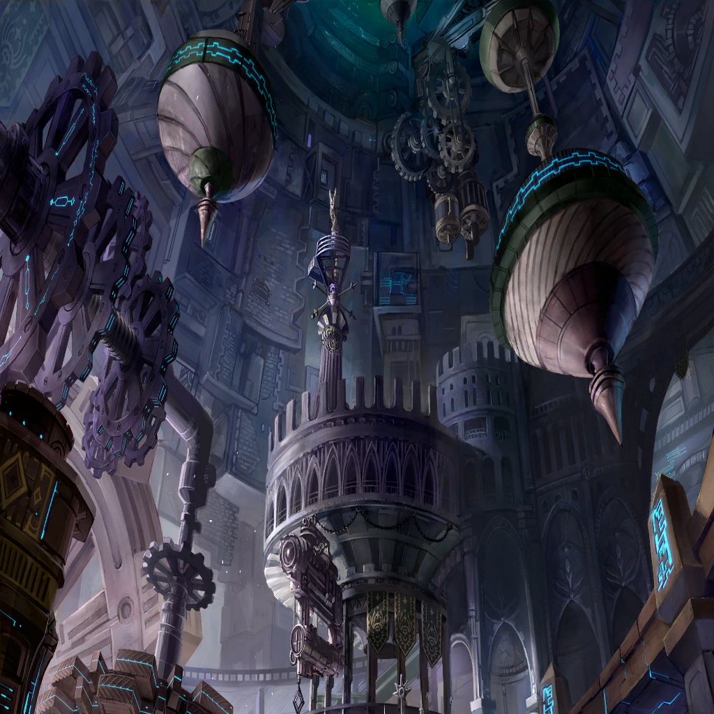

|
|

フューリー |
今になって思い返せば |
フューリー |
きっと憎まれていた
だけど守ってもくれていた |
フューリー |
だから私、彼女になら
どれだけ恨み言を言われようと |
フューリー |
今握れる手があるなら
もう離したりしない |
 |
フューリー |
タロットカード
混ぜてくださいますか |
フューリー |
… |
フューリー |
気休めは得意ではないんです
それが呪いになってしまうかも
しれないから |
フューリー |
…はい
ではカードはここに置いて |
フューリー |
…結果が怖いですか？ |
フューリー |
恐怖心は失くしたのでしょう？
異次元の力の代償に…
違いました？ |
フューリー |
…………“死神”のタロットですね |
フューリー |
…正位置の“死神”は
『死屍累々』『バッドエンド』を意味します |
フューリー |
…………どこへ
出て行ったんでしょうね |
フューリー |
アムは… |
 |
| アム |
…………ソル |
| |
置いていかれるのは寂しくて
与えられるばかりが惨めで |
| アム |
十戒衆のリーダー…
ロストブルーの太陽… |
| アム |
私は… |
 |
| アム |
…………私じゃ、だめです |
| |
負い目ばかりを
アナタに与えてしまう |
| アム |
私が、いたら―― |
| |
アナタの目は
失くしたものばかりを追う |
| アム |
私も、そう |
 |
| |
失敗に追いすがって
努力を繰り返した |
| |
取り返せないものなんて
ないと思ってた |
 |
| |
アナタについた歯形を
もっと深く刻んでしまう |
| |
だから屍の血を啜っていた |
| |
手があれば
屍を作ることだけはできたから |
 |
| |
アナタは
すぐに駆け寄って来て |
| |
まっすぐ見つめられるのが怖かった |
| |
あたたかい笑顔に
キリキリと胃を痛めた |
| アム |
…いつも足手まとい |
|  |
| ジェスター |
運命的な再会に感動しようよ |
| アム |
…………ひッ!? |
| ジェスター |
怒りも悲しみも抱かないか |
| アム |
っ、っ、っ…!! |
 |
| ジェスター |
舞台裏を覗きに来たらコレだ |
| アム |
な、何を、しに…!? |
| ジェスター |
成長しないな。キミは |
| ジェスター |
目をくり抜かれても
両腕をひっこ抜かれても
そうやって心を黙らせている |
| アム |
そ、んな、こと、ありません…！ |
| ジェスター |
お前はまた、誰かの食い物に |
| アム |
私は、もう… |
| ジェスター |
意志なき献身など
家畜と何が違う？ |
| アム |
か、かえして…！ |
| ジェスター |
もっと大事なものがあるだろう？ |
| アム |
あっ、うぁあっっ!? |
| ジェスター |
思い出して。思い出して。思い出して |
| アム |
な、何を…！ |
| ジェスター |
ボクがいるじゃないか。ママ |
| アム |
私は…………！ |
| ジェスター |
あぁんな女より |
| アム |
…！
び、あんか…!? |
| ジェスター |
もっとボクを構ってよ |
| アム |
かえして…ッッ!! |
| アム |
ビアンカを！ 私の目を！ |
| ジェスター |
ああ。ダメだダメだ。まだダメだ |
| アム |
うああああぁっっ!? |
| ジェスター |
叫ぶだけじゃあ
何も伴わない |
| アム |
…!? |
| ジェスター |
弱くなったね |

ソル |
“バン” |
| ジェスター |
おおぉ |
| アム |
…………ソル |
ソル |
…ああ |
| ジェスター |
王！ 王！ 王！ 王～～っ！
O！ O！ O！ O～～っ！ |
| アム |
…ソル、私 |
ソル |
いいんだ |
| アム |
ソル…？ |
| ジェスター |
何がイイもんか
力不足もいいとこだ |
ソル |
いいんだよ |
ソル |
お前がいいんだよ |
| アム |
…！ |
| ジェスター |
それは情だ |
| アム |
ソル…………、ソル…！ |
ソル |
アム |
| アム |
は、い…？ |
ソル |
ついてきてくれ |
| アム |
…！ |
| アム |
はいっ |
| ジェスター |
わあカッコいい |
 |

ツヴァイ |
クロ、知ってる？
『猫は死ぬ前に姿を隠す』んだって |
ツヴァイ |
どうしてだろうね？
猫が自分の死を主人に見せたくないから？
そう思ったんだけど、違うみたい |
|  |
ツヴァイ |
ただ自分が弱ってきちゃって
誰にも危害を加えられない場所に隠れる為
…なのかも、っていう話なんだって |
ツヴァイ |
だから一緒にいたくないわけじゃないよ
弱っちゃって自分がわからなくなっただけ |
ソル |
羨ましかったのは、ホントだ |
ツヴァイ |
ロストブルーに産まれた時点で―― |
| アム |
…？ |
ツヴァイ |
闘って糧を得ることでしか
生きていけない |
ソル |
闘う力、強さがある…お前が |
ツヴァイ |
できることをできないのが
一番辛かったから |
ソル |
だから…
それを失くしたお前の気持ち
聞けなくて |
| アム |
…いいえ |
ソル |
代わりに俺、力が手に入って
生き方も随分変わっちまって |
| アム |
………… |
ソル |
だから
お前の両腕が俺の力になるなら
俺は手放しで世界に喧嘩を売る |
| アム |
！ |
ソル |
もう何も怖がらない
狂ってると思われたっていい |
ソル |
恐れ多くても
ロストブルーの太陽を名乗る |
| アム |
…！ |
| |
『噛まれたって、痛くないよ』と
いつか彼女は言っていた |
ソル |
お前が闘いたくないなら寝床はある
出て行くならそれもいい |
| |
『それより
苦しそうな顔を見るのが辛い』と
いつか彼女は言っていた |
ソル |
こんな狂ったドン底
いるもんじゃねえ。当然だ |
ツヴァイ |
でも嬉しかったんだよ
ナインデッドに闘う場所をもらえて |
ソル |
お前の気持ち
教えてくれないか |
| |
私もそうだ |
ツヴァイ |
ソル。あなたに
手段を造ってもらえて |
ソル |
アム |
| |
アナタへの気持ちが
抑えられない |
 |
| ジェスター |
… |
| ジェスター |
奈落が舞台か？ |
| ジェスター |
キミはまた
そうやって誰かに闘わされる |
| ジェスター |
『誰かに食い物にされること』と
『誰かの糧になれること』
台詞が異なるだけで意味は同じでは？ |
| ジェスター |
『捧げた』と言えば聞こえはいいが
それは単なる“依存”じゃないか？
心地よく騙された“狂信”では？ |
ソル |
独白が過ぎるぜ |
| ジェスター |
相手役がいなくてね |
ソル |
つき合おうか？ |
| ジェスター |
キミの王たる暴虐には
目を見張るよ、ソル |
| ジェスター |
虐殺を自己実現の道具にすり替え
臣下から供物を搾り取る…
そのたび心を痛める芝居も実に見ものだ |
ソル |
… |
| ジェスター |
人間にしか持ち得ない悪意だ |
ソル |
…………否定はしない
クソ以下なのは今に始まってねえ |
| ジェスター |
だからこそ彼女には落胆している
てんで舞台映えしない |
| ジェスター |
ママみたいになって欲しいんだよ
素敵な舞台をママと観たいんだよ
楽しみにして観に来たのに… |
ソル |
楽しませてはやれないが―― |
| ジェスター |
あんなんじゃダメなんだよ
これじゃあさ |
ソル |
――相手にはなってやれるぜ |
 |
ソル |
お色直しにかかってね |
| ジェスター |
…なんだって？ |
| 市民Ａ |
…あれ |
| 市民Ｂ |
どうした？ |
フューリー |
知ってます？ タロットの意味 |
ソル |
知ってるか？ こんなお約束 |
| 市民Ａ |
…いや、時計塔が |
フューリー |
タロットは
ひっくり返すと意味が変わること |
フューリー |
“死神”のカードが
逆位置で意味するのは
『停止』 |
| 市民Ｂ |
止まってる |
フューリー |
そして『上昇』『再生』 |
ソル |
秘密兵器は
地下に隠してあるんだよ |
|
| ジェスター |
…!? |
| アム |
…………私 |
| アム |
依存でも、狂信でも、いいです |
| ジェスター |
どこから声が…？ |
ソル |
奈落だよ |
| アム |
私――… |
| ジェスター |
これは――… |
| ジェスター |
…！ |
| アム |
私、ソルとごはんが食べたい |
| ジェスター |
…ハッ、ハハハハハハハッ!?
こんなのアリかい…!?!? |
ソル |
魔導工学研究の権威が
どうしても人型の機械兵器を造りたく
非合法な研究データをご希望でね |
| ジェスター |
幾つ武器を積んでいる…!? |
ソル |
丁度俺にもロストブルーの金貸しが
たんまり貯め込んでたヘソクリがあった
奮発した甲斐があったってもんだ |
| ジェスター |
まるで、これはまるで………… |
| アム |
私、努力だけは好きでした |
| ジェスター |
！ |
| アム |
何を抑えられていた時も
努力だけは、自由にできたから
努力だけが、私を無限に成長させた |
| アム |
ソルはその力を
見てくれた人だから |
| アム |
私の手を
取ってくれた人だから |
| ジェスター |
…！
人間性まで棄てて
武器そのものに成り下がってまで…!? |
| ジェスター |
機械に頼って
それが努力かい…!? |
ソル |
武器を扱おうと
努める力がある |
| ジェスター |
つけ焼刃じゃないか…！ |
ソル |
完全じゃなくとも |
| アム |
努力で補います |
| ジェスター |
生身のままが良かったのに――
生身のママが良かったのに――
こんなの観せられたら―― |
| ジェスター |
こんな禁じ手！
期待しちゃうじゃないか!!
評価が難しいけど期待しちゃうよ!! |
| ジェスター |
デウス・エクス・マキナみたいだ!!!! |
ソル |
いくぜ。アム |
| アム |
どこまでも。ソル |
ソル |
それがお前の
武器の胃袋（ストレージ）だ |
| アム |
“アームズストレージ”
――――レディ―――― |